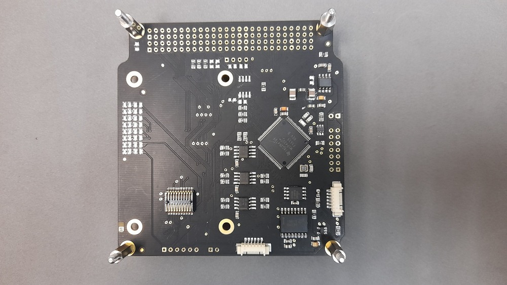
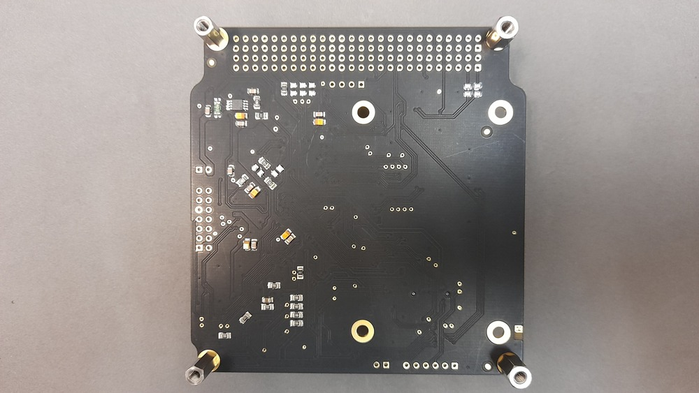
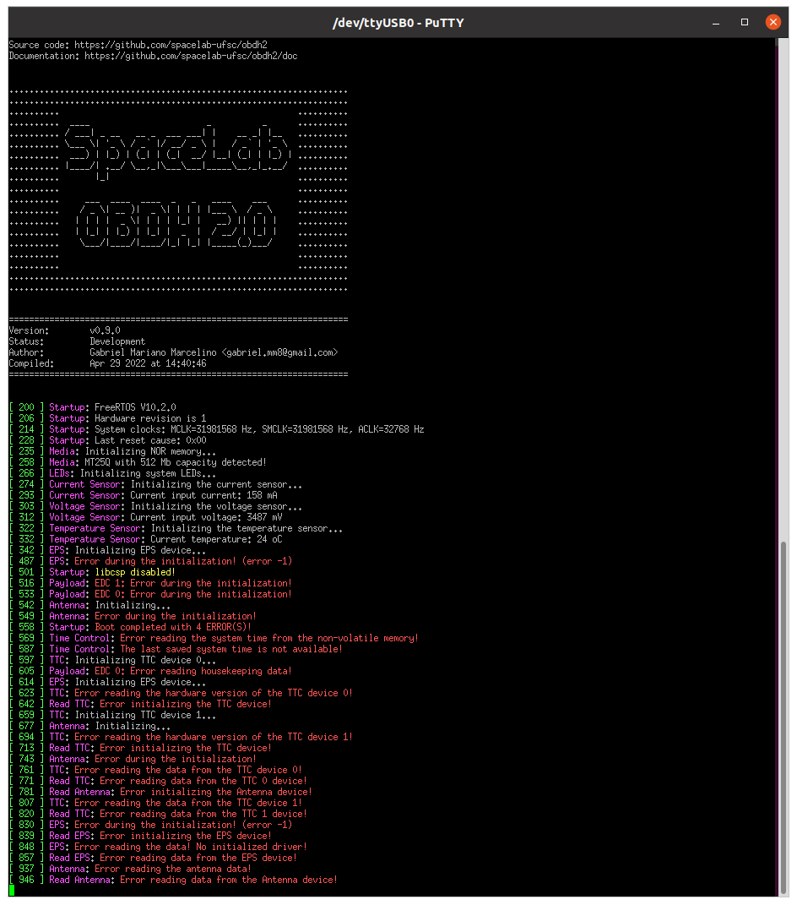
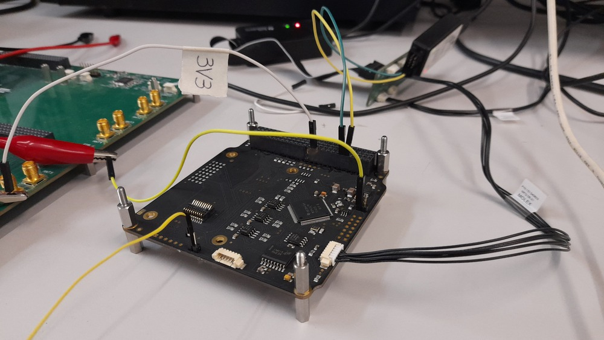
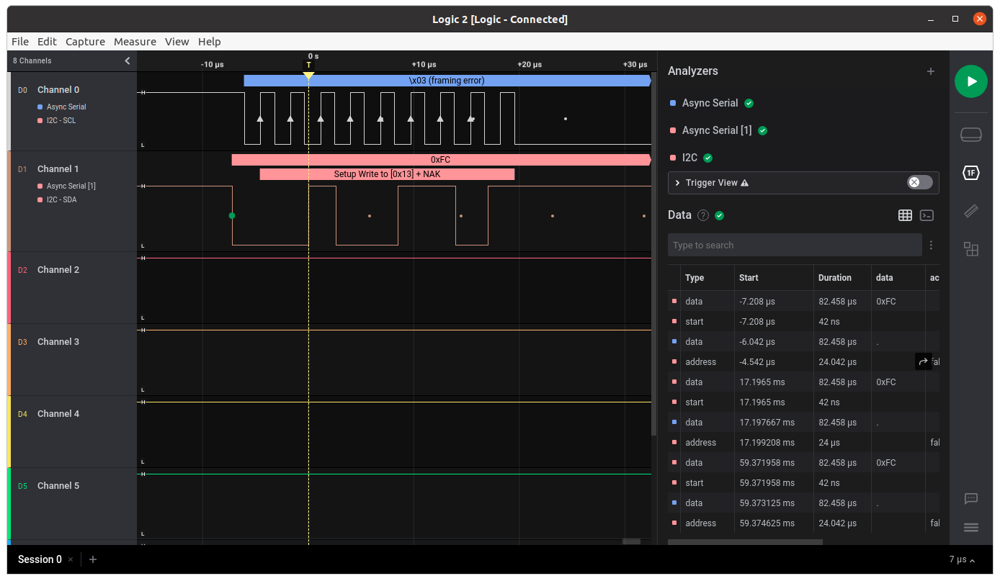
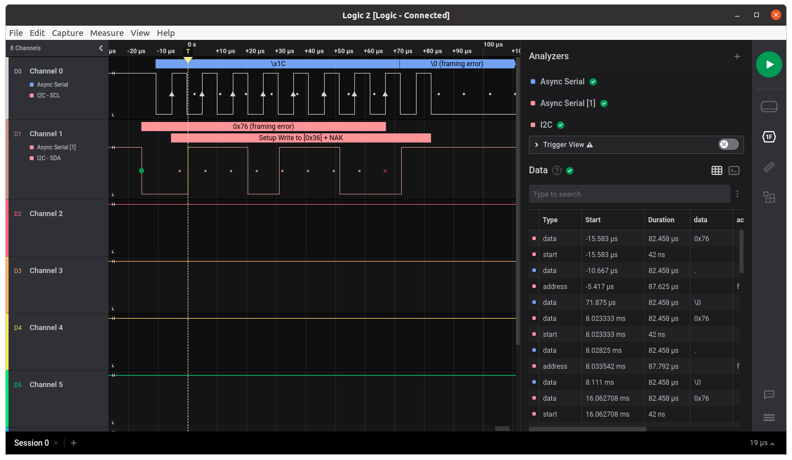
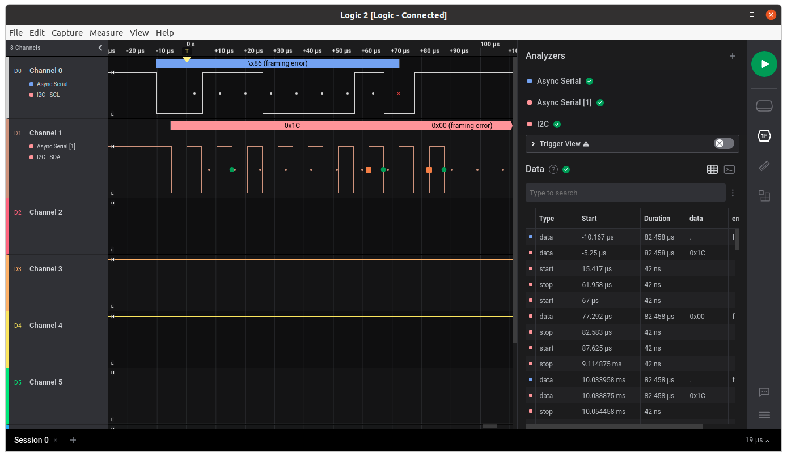
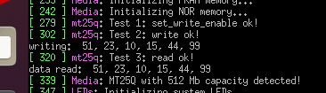
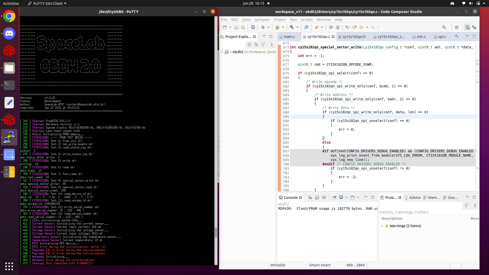
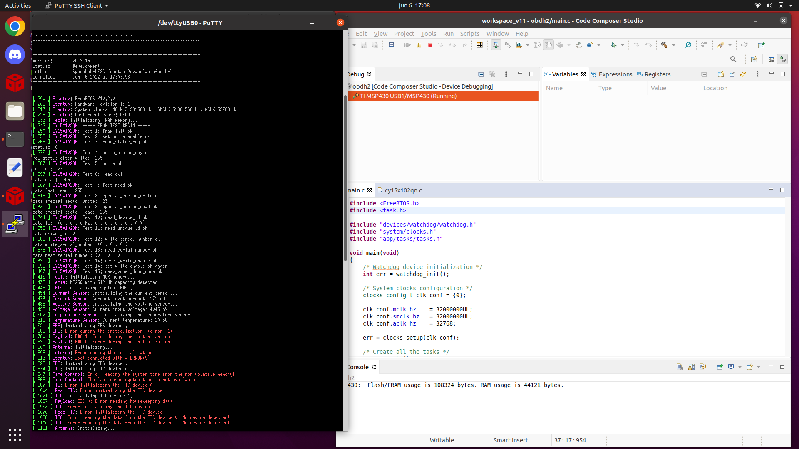

Test Report of v0.7 Version
This appendix is a test report of the first manufactured and assembled PCB (version v0.7).
PCB manufacturer: PCBWay (China)
PCB assembly: PCBWay (China)
PCB arrival date: 2022/04/18
Execution date: 2022/04/22 to 2022/08/10
Tester: Gabriel M. Marcelino, Vitória B. Bianchin and Bruno Benedetti
DNP components: P8, P2, P5, P6, P7, D1, D2, D3, D4, D5, D6, D7, D8, U10, R19, R20, R_ESD, J_PC3, J_PC4, R2, R3, R4, R5, R6, R7, R12, R13, J_V3, J_PC5, J_PC6, J_PC7, J_PC1, J_PC2, V1, V4, R36, C36
Visual Inspection
Test description/Objective: Inspection of the board, visually and with a multimeter, searching for fabrication and assembly failures.
Material:
Digital microscope (1000x)
Multimeter Fluke 17B+
Results: The results of this test can be seen in Figures Fig. 45 (top view of the board) and Fig. 46 (bottom view of the board).
Conclusion: No problems were identified on this test.

Fig. 45 Top view of the OBDH 2.0 v0.7 board.

Fig. 46 Bottom view of the OBDH 2.0 v0.7 board.
Firmware Programming
Test description/Objective: Inspection of the board, visually and with a multimeter, searching for fabrication and assembly mistakes.
Material:
Code Composer Studio v11
MSP-FET Flash Emulation Tool
USB-UART converter
PuTTy
Results: The results of this are available in Fig. 47, where the log messages of the first boot of the board can be seen.
Conclusion: No problems were identified on this test.

Fig. 47 Log messages during the first boot.
Communication Busses
Test description/Objective: Test the communication busses of the board, as listed below:
I\(^{2}\)C Port 0
I\(^{2}\)C Port 1
I\(^{2}\)C Port 2
Material:
Saleae Logic Analyzer (24 MHz, 8 channels)
Saleae Logic software (v2)
MSP-FET Flash Emulation Tool
Results: The results of this test can be seen in Figures Fig. 49, Fig. 50 and Fig. 51.
Conclusion: No problems were identified on this test, all buses are working as expected.

Fig. 48 Setup of the I2C port tests.

Fig. 49 Waveform of the I2C port 0.

Fig. 50 Waveform of the I2C port 1.

Fig. 51 Waveform of the I2C port 2.
Sensors
Input Voltage
Test description/Objective: Verify the input voltage measurements of the board.
Material:
Code Composer Studio v11
MSP-FET Flash Emulation Tool
Programmable power supply
USB-UART converter
Screen (Linux software)
Results: TBC.
Conclusion: The input voltage was measured correctly by the sensor.
Input Current
Test description/Objective: Verify the input current measurements of the board.
Material:
Code Composer Studio v11
MSP-FET Flash Emulation Tool
Programmable power supply
USB-UART converter
Screen (Linux software)
Results: TBC.
Conclusion: The input current was measured correctly by the sensor.
Peripherals
NOR Flash Memory
Test description/Objective: Test the functionality of the NOR flash memory by verifying the device ID register of the IC and performing writing/reading operations.
Material:
Code Composer Studio v11
MSP-FET Flash Emulation Tool
USB-UART converter
Screen (Linux software)
Results: The results of this test can be seen in Fig. 52.
Conclusion: No problems were identified on this test, as can be seen in Fig. 52, an writing/reading operation were executed with success.
{kind=link}

Fig. 52 Test results of the NOR flash memory.
FRAM Memory
Test description/Objective: Test the functionality of the FRAM memory by verifying the device ID register of the IC and performing writing/reading operations.
Material:
Code Composer Studio v11
MSP-FET Flash Emulation Tool
USB-UART converter
Screen (Linux software)
Results: The results of this test can be seen in Fig. 53.
Conclusion: No problems were identified on this test.
{kind=link}

First FRAM memory test result.{kind=link}

Second FRAM memory test result.Fig. 53 Test results of the FRAM memory.
Conclusion
No major problems were identified during the executed tests, all peripherals all working as expected.